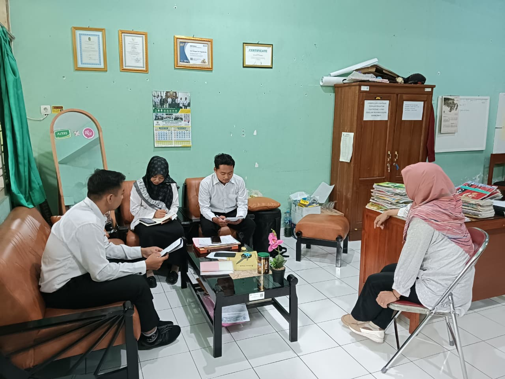
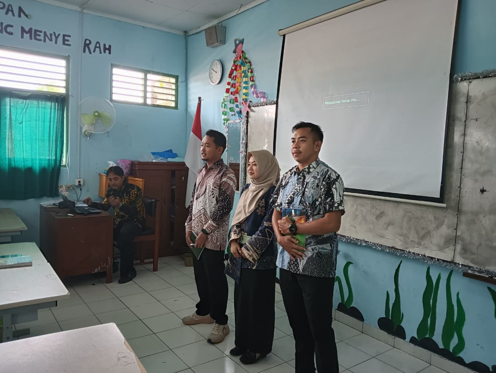

Rekam Jejak Lapangan PPL PPG
Dokumentasi Kegiatan
Koleksi visual autentik dinamika Praktik Pengalaman Lapangan (PPL) PPG Prajabatan di SMP Negeri 12 Yogyakarta. Terdiri dari fase PPL Terbimbing (PPL 1) yang menitikberatkan asistensi & observasi pedagogik, serta PPL Mandiri (PPL 2) yang memperluas tanggung jawab pengajaran, kepengawasan, dan integrasi budaya sekolah.
Total 12 Momen Lapangan
6 PPL Terbimbing (PPL 1)
6 PPL Mandiri (PPL 2)
SMP Negeri 12 Yogyakarta



